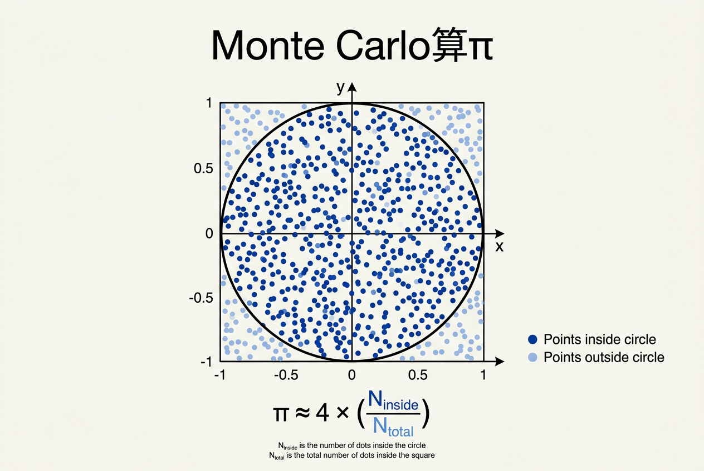
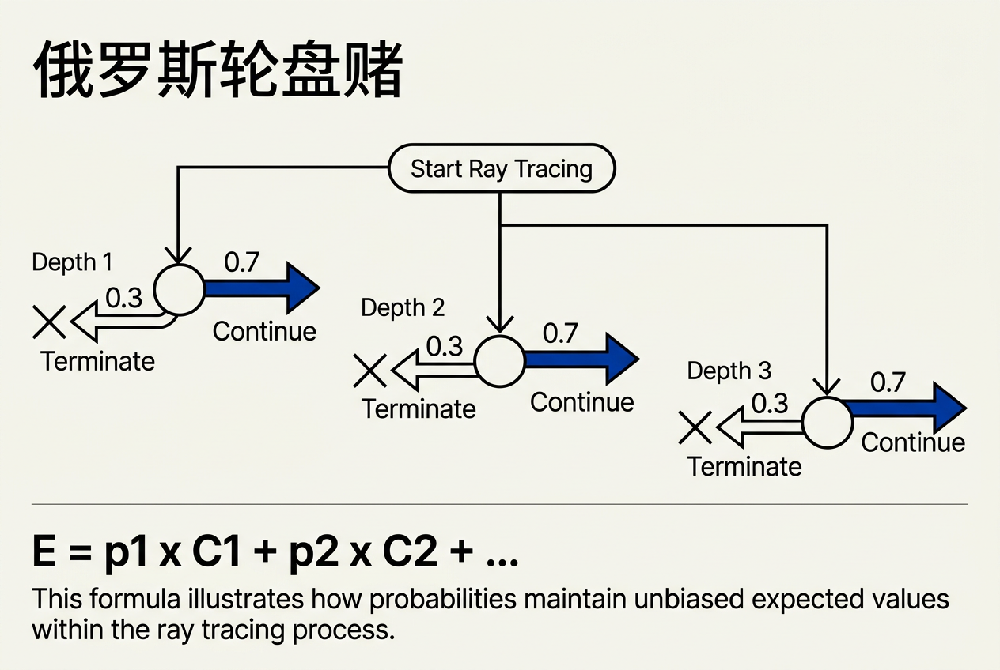
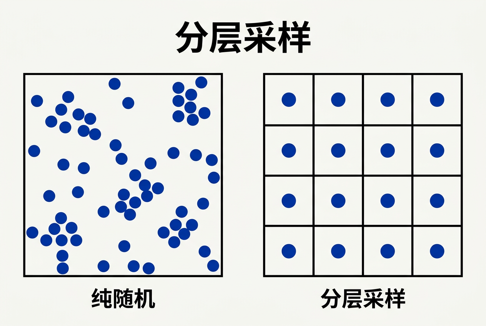

第13章：采样 — 零基础讲义
讲义说明
本讲义基于 Steve Marschner & Peter Shirley 所著《虎书5》第5版第13章（p.335-355）。
本章是图形学的"概率基础"——它告诉你：怎么用随机采样解决图形学里"积分算不出来"的问题。
学完本章，你将真正理解 Monte Carlo 积分、Importance Sampling、Metropolis 算法等核心概念。
本版插画采用 Guizang 材质插画风格重新绘制。
学习目标
- 理解为什么要学采样——像素的颜色是各方向光的积分
- 理解测度（Measure）的直觉——面积尺/角度尺/长度尺
- 掌握积分的概率视角——把积分变成"期望"
- 掌握大数定律——硬币投掷 100 次 vs 10000 次
- 理解Monte Carlo 算 π——数值例子
- 掌握3 种采样方法：Function Inversion / Rejection / Metropolis
- 理解重要性采样（Importance Sampling）——三步推导
- 理解Metropolis 算法——"山上散步"类比
13.0 为什么要学采样？
13.0.1 像素的颜色 = 各方向光的积分
一个像素的颜色 = 从该像素射出的所有方向的光的积分
想象你站在一扇窗户前，透过窗玻璃看外面的世界。你的一个眼球像素收到的光，实际上是来自所有方向的——天空的蓝光、建筑的灰光、草地的绿光——全部叠加在一起。
在计算机图形学里，一个像素的颜色公式是：
像素颜色 = ∫_{所有方向} L(方向) × 滤波器(方向) d方向| 符号 | 含义 |
|---|---|
L(方向) | 来自某个方向的光的"辐射亮度"（radiance） |
滤波器(方向) | 像素对各个方向的敏感度 |
d方向 | 在方向空间中的微元（球面面积元） |
13.0.2 为什么这个积分算不出来？
问题：这个积分没有解析解。你不能用一个公式算出来。
为什么？ 因为 L(方向) 取决于：
- 场景里几百个物体的位置、形状、材质
- 几十个光源的强度、颜色、位置
- 光在物体之间经过了几次反射/折射
怎么可能用一个闭式公式表达？
所以——只能用数值积分。这就是采样的意义：你用有限个方向上的光的值，来近似那个无限积分。
每条"采样光线"就是一次对 L(方向) 的"测量"。采样越多，近似越准确。这就是为什么本章名叫"采样"——它是所有现代渲染器（从 Pixar 到 Unreal）的核心。
想象你要知道"全国有多少人喜欢巧克力"。你不能问 14 亿人（太多），你只能随机问 1000 人。1000 人的答案 × 总人口 = 估计值。采样 = 抽样调查。样本越多，估计越准。
13.1 测度（Measure）
13.1.1 什么是测度？
测度 = 一把"尺子"——用来量一个集合的大小
想象你有三把不同的尺子：
1. 面积尺（平方米）
- 量房间大小：30 平方米
- 量硬币大小：0.0005 平方米
- 量一张纸的厚度：0 平方米（因为厚度太薄，在面积尺下是 0）
2. 角度尺（弧度/立体角）
- 量星星在天空中的"大小"：0.001 立体角
- 量你的手掌在眼前的"大小"：0.5 立体角
- 量画面左上角到右下角的范围：π 立体角
3. 长度尺（米）
- 量房间长度：5 米
- 量一张纸的厚度：0.0001 米
关键：同一个集合（比如"一张纸"），用不同的尺子量——不同的结果。
纸的面积（面积尺） = 0.06 平方米
纸的厚度（长度尺） = 0.0001 米
纸的一维流形（面积尺） = 0 平方米（因为"一张纸"在 2D 中是 0 面积）13.1.2 图形学为什么需要测度？
"在某个测度上求平均" = 图形学的核心工具
公式：
average(f) = ∫ f(x) dμ(x) / ∫ dμ(x)这看起来抽象，但实际很直观：
例子：穿过 [0,1] 正方形的直线的平均长度
问题：画一条穿过 1×1 正方形的直线，它的平均长度是多少？
- 如果用"角度尺"（θ 均匀分布）：答案是 ~1.2
- 如果用"截距尺"（a, b 均匀分布）：答案是 ~1.7
为什么不同？ 因为"角度均匀"和"截距均匀"是两种不同的"随机直线"——测度不同，平均不同。
13.1.3 2D 直线测度——选择最简单的尺子
在图形学里，经常需要在 2D 平面上"随机选一条直线"。
法线坐标（p, θ）——最简单的测度：
直线的表示：x·cosθ + y·sinθ - p = 0
自然测度：dμ = dp·dθ为什么这个最自然？因为它是平移和旋转不变的——无论如何移动/旋转直线坐标系，同样的集合得到同样的测度。
| 参数化 | 测度公式 | 复杂度 |
|---|---|---|
| 斜截式 y = mx + b | dm·db | 简单但不平移不变 |
| 截距式 (a, b) | ab·da·db / (a²+b²)² | 复杂 |
| 法线式 (p, θ) | dp·dθ | 最简单！无系数 |
💡 实战意义：在渲染中采样"随机光路"时，法线坐标让采样代码最简单。
13.2 连续概率
13.2.1 概率密度函数（PDF）
PDF p(x) = "随机变量在 x 附近的相对可能性"
两个核心性质：
p(x) ≥ 0 // 非负
∫_{-∞}^{+∞} p(x) dx = 1 // 归一化直觉：
- 概率密度 = "单位长度/面积上的概率"
- 在一个小区间 [x, x+dx] 内的概率 = p(x)·dx
- 总面积 = 1（总概率）
例子：
| 分布 | |
|---|---|
| 均匀分布 U[0,1] | p(x) = 1（在 0 到 1 之间恒为 1） |
| 正态分布 N(0,1) | p(x) = (1/√(2π))·e^(-x²/2) |
| 指数分布 | p(x) = λ·e^(-λx) |
13.2.2 期望值
期望 = "按概率密度加权后的平均"
E[f(x)] = ∫ f(x) · p(x) dx重要性质：
- 线性：E[af + bg] = a·E[f] + b·E[g]
- 乘法（独立时）：E[fg] = E[f]·E[g]
线性性质非常重要——它让"把大问题拆成小问题"成为可能。
13.2.3 方差（Variance）
方差 = "随机变量和期望的距离的平方的期望"——衡量"有多散"
V[x] = E[(x - E[x])²] = E[x²] - E[x]²标准差：σ = √V[x]——"typical 误差"
关键性质：
- 独立变量方差相加：
V[x + y] = V[x] + V[y] - 常数缩放：
V[a·x] = a²·V[x]
因为独立时方差的性质最简单——直接相加。如果不独立，方差之间有"协方差"项。这在分层采样里特别重要——分层后的样本不是完全独立的，但相关性让方差公式变得有趣。
13.3 大数定律与 Monte Carlo 积分
13.3.1 大数定律——硬币投掷
大数定律 = "投硬币的次数越多，正面比例越接近 1/2"
实验：
| 投掷次数 | 正面比例（典型） | 偏差 |
|---|---|---|
| 10 次 | 70% | 20% |
| 100 次 | 53% | 3% |
| 10000 次 | 50.23% | 0.23% |
数学形式：
P(lim_{N→∞} (1/N) · Σᵢ xᵢ = E[x]) = 1随 N 增大，样本均值以概率 1 收敛到期望值。
误差：收敛速度 = O(1/√N)——想让误差减半，样本数需要翻 4 倍。
中心极限定理。独立同分布的随机变量和的标准差 ≈ √N（因为独立时方差相加），所以样本均值的标准差 = √N / N = 1/√N。误差随样本数呈平方根衰减——这意味着采样效率的提升是"边际递减"的。
13.3.2 Monte Carlo 积分基本公式
MC 积分 = "用样本平均代替积分"
最简单的形式：
∫ f(x) dx ≈ (1/N) · Σᵢ f(xᵢ) 其中 xᵢ 从均匀分布中采样更一般的形式（带 PDF）：
∫ f(x) · p(x) dx ≈ (1/N) · Σᵢ f(xᵢ) 其中 xᵢ ~ p(x) 分布13.3.3 Monte Carlo 算 π —— 数值例子
用随机点算 π
方法：在一个 2×2 的正方形内均匀随机撒点，统计落在单位圆内的比例。

正方形面积 = 2 × 2 = 4
单位圆面积 = π × 1² = π
落在圆内的概率 = π / 4
→ π = 4 × (圆内点 / 总点数)| 符号 | 含义 |
|---|---|
4 | 2×2 正方形的面积 |
π | 单位圆的面积 |
π / 4 | 随机点落在圆内的概率（面积比） |
算法：
import random
def estimate_pi(N):
inside = 0
for i in range(N):
x = random.uniform(-1, 1) # 随机 x
y = random.uniform(-1, 1) # 随机 y
if x*x + y*y <= 1: # 在圆内？
inside += 1
return 4 * inside / N收敛速度：
| 样本数 N | 估计值（典型） | 误差 |
|---|---|---|
| 10 | 3.20 | 1.8% |
| 100 | 3.12 | 0.7% |
| 1,000 | 3.144 | 0.08% |
| 100,000 | 3.1412 | 0.01% |
13.4 重要性采样（Importance Sampling）
13.4.1 问题：普通 MC 浪费样本
普通 MC：在积分域内均匀采样。
I = ∫_{0}^{1} f(x) dx
均匀采样：x₀=0.1, x₁=0.5, x₂=0.9
if f(x) 只在 x≈0.8 附近很大，其他地方≈0：
样本 x₀=0.1 → f(0.1)≈0 （浪费！）
样本 x₁=0.5 → f(0.5)≈0 （浪费！）
样本 x₂=0.9 → f(0.9)很大 （有用）问题：大量样本浪费在 f(x) 接近于 0 的区域。
13.4.2 三步推导：从"均匀采样"到"有偏采样"
目标：计算 I = ∫ f(x) dx
关键技巧：乘一个 q(x)/q(x)——"桥"
第一步：乘上 q/q
虽然看起来无意义，但这是整个方法的核心：
I = ∫ f(x) dx = ∫ f(x) × 1 dx = ∫ f(x) × (q(x)/q(x)) dx没错，这只是乘以 1。但把分子分母分开看：
I = ∫ [f(x) / q(x)] × q(x) dx第二步：把右边看成期望
现在，q(x) 是一个概率密度函数（PDF）。那么：
I = ∫ [f(x) / q(x)] × q(x) dx = E_q[ f(X) / q(X) ]这里的期望 E_q 是在分布 q(x) 下计算的。
第三步：用样本近似期望
I ≈ (1/N) · Σᵢ f(xᵢ) / q(xᵢ) 其中 xᵢ ~ q(x)公式三连（完整推导）：
I = ∫ f(x) dx
= ∫ f(x) · [q(x)/q(x)] dx # 第一步：乘 q/q
= ∫ [f(x)/q(x)] · q(x) dx # 第二步：重组
= E_q[ f(X)/q(X) ] # 第三步：这是期望
≈ (1/N) · Σᵢ f(xᵢ)/q(xᵢ) # 第四步：样本近似| 步骤 | 操作 | 目的 |
|---|---|---|
| 1 | 乘 q/q | 引入采样分布 |
| 2 | 重组为 [f/q] × q | 让 q 成为一个 PDF |
| 3 | 看成期望 | 准备好样本近似 |
| 4 | 样本近似 | 得到 MC 估计 |
q(x) ∝ f(x) 时——即 q 正比于 f 的形状——f(x)/q(x) 是常数，方差 = 0！但在实践中，我们不知道 f 的形状（否则就不需要算了），所以选择一个近似 f 形状的 PDF。
13.4.3 重要性采样 vs 普通 MC
| 方法 | 方差 | 解释 |
|---|---|---|
| 普通 MC | O(1/N) × 常数 C | C 随 f 的形状变化 |
| 重要性采样 | O(1/N) × 小常数 C' | C' 取决于 q 与 f 的相似度 |
| 完美 q = f | 0 | 不需要样本！ |
实际效果：一个好的重要性采样分布可以让方差下降 10-100 倍。
13.4.4 应用
环境贴图采样：
f(x)= 环境光在方向 x 的强度q(x) ∝ 环境光强度 × cosθ- 结果：高光区域被多采样，暗区域少采样
BRDF 采样：
f(x)= BRDF(入射方向 x)q(x) ∝ BRDF(x) × cosθ- 结果：镜面反射方向被多采样
直接光采样：
f(x)= 光源在 x 方向的贡献q(x) ∝ 光源强度- 结果：亮光源被多采样
13.5 三种采样方法
13.5.1 函数反演（Function Inversion）
最直接的采样方法——找 CDF 的反函数
3 步算法：
1. 对 PDF p(x) 求积分得到 CDF：P(x) = ∫_{-∞}^{x} p(t) dt
2. 求 CDF 的反函数：P⁻¹
3. α = P⁻¹(ξ)，其中 ξ ~ U[0,1]| 步骤 | 操作 | 输出 |
|---|---|---|
| 1 | 积分 PDF | CDF P(x) |
| 2 | 求反函数 | P⁻¹(y) |
| 3 | 代入均匀随机数 | 样本 α |
例子：p(x) = 3x²/2 on [-1, 1]
# 第 1 步：求 CDF
P(x) = ∫_{-1}^{x} (3t²/2) dt = (x³ + 1)/2
# 第 2 步：求反函数
P⁻¹(ξ) = ∛(2ξ - 1)
# 第 3 步：生成样本
α = ∛(2ξ - 1)13.5.2 拒绝采样（Rejection）
简单但低效——在包围盒里随机采，不在目标区域就拒绝
def rejection_sample(pdf, bound_box):
while True:
x = uniform(bound_box.min, bound_box.max)
y = uniform(0, bound_box.max_density)
if y < pdf(x): # 在接受区域内？
return x # 接受
# 否则拒绝，重来优点：实现极其简单。
缺点：
- 效率低（很多点被拒）
- 不能和分层采样结合使用
💡 实战：拒绝采样几乎只用于调试和原型，从不用于最终产品。
13.5.3 Metropolis 算法——"山上散步"类比
Metropolis = "一个盲人在山上散步，每次迈一小步，倾向于往高处走"

直觉：
想象你在一座山上（山的形状 = 目标分布 p(x)）。你是一个盲人，看不见整座山，只能用拐杖感受脚下的高度。
你想"均匀地"访问整座山——高度越高的地方，访问次数越多（因为 p(x) 越大）。
散步规则：
- 你现在站在位置 x（当前高度 = p(x)）
- 随机迈一小步到候选位置 y（附近随机走）
- 比较两个高度：
- 如果 y 比 x 高（p(y) > p(x)）：接受——走到 y
- 如果 y 比 x 矮（p(y) < p(x)）：以概率 p(y)/p(x) 接受——否则留在 x
- 记录当前位置作为样本
关键：即使你在"山顶"（p(x) 最大），你依然可以往下走——只是概率小一些。这保证了你不会卡在局部极值。
为什么这个算法对图形学重要？
传统 MC 需要知道 PDF 的确切形式（才能做反演或重要性采样）。但在路径追踪中，光路分布极其复杂——没有解析的 PDF。
Metropolis 不需要知道 PDF 的解析形式，只需要能计算任意两点之间的 PDF 比值。
算法伪代码：
def metropolis(target_pdf, step_size, N):
x = 初始位置
samples = []
for i in range(N):
y = x + normal_random(0, step_size) # 迈一小步
a = target_pdf(y) / target_pdf(x) # 高度比
if random() < min(1, a): # 以概率 a 接受
x = y
samples.append(x) # 记录样本
return samples应用——MLT（Metropolis Light Transport）：
- Veach & Guibas 1997 引入——离线渲染的里程碑
- MLT 将 Metropolis 应用到光路空间
- 对"难以采样"的光路（焦散、SDS 路径）特别有效
缺点：
- 样本之间相关（相邻样本不是独立的）
- 需要 burn-in（初始样本不可用，需要丢弃前几千个）
- 收敛性分析困难
想象你是一个盲人，想"均匀地"访问整座山。普通 MC 像"用直升机随机降落在山的任意位置"——简单但低效。Metropolis 像"自己用拐杖爬山"——慢一些，但能到达山的任何角落，特别适合直升机到不了的地方（如山的深处、岩洞）。
13.6 分层采样（Stratified Sampling）
分层采样 = "把空间切成小格子，每格采一个样本"

def stratified_2d(n):
"""在一个正方形里采 n² 个分层样本"""
samples = []
for i in range(n):
for j in range(n):
u = (i + random()) / n # 每个格子内随机偏移
v = (j + random()) / n
samples.append((u, v))
return samples| 参数 | 含义 |
|---|---|
n | 每维的格子数（共 n² 个格子） |
i, j | 格子的整数索引 |
(i + random()) / n | 格子内的随机位置 |
为什么比纯随机好？
纯随机可能出现"聚团"——几个样本聚在一起，导致大片空白区域无样本。分层采样保证了均匀覆盖。
方差对比：
| 方法 | 方差收敛速度 |
|---|---|
| 普通 MC | O(1/N) |
| 重要性采样 | O(1/N) × 小常数 |
| 分层采样 | O(1/N³)——巨幅加速！ |
实际应用：
- 每个像素使用 4×4 分层采样 → 16 条光线
- 保证像素内覆盖均匀 → 减少噪点
- 现代渲染器几乎必须使用分层采样
直觉：分层后，每个格子里的样本"代表"整个格子，所以估计的方差是格子内部的方差 + 格子之间的方差。格子数 = n² = N（总样本数），格子内部方差 ∝ 1/n² = 1/N。但格子之间方差因为分层而消失——只剩格子内部方差 + 一个高阶项。结果是 O(1/N³)，比普通 MC 的 O(1/N) 好得多。
13.7 球面/圆盘上的均匀采样
13.7.1 圆盘均匀采样
def sample_disk(R):
ξ1 = random()
ξ2 = random()
φ = 2 · π · ξ1 # 角度均匀
r = R · sqrt(ξ2) # 半径用 sqrt 补偿面积
return (r · cos(φ), r · sin(φ))| 变量 | 含义 |
|---|---|
φ = 2π · ξ₁ | 角度在 [0, 2π] 上均匀 |
r = R · √ξ₂ | 半径用 √ 补偿（因为圆面积 ∝ r²） |
ξ₂，点会"聚在中心"——大多数点会落在小 r 处。原因是圆面积随 r² 增长，半径应该用 √ξ₂ 来"铺平"这种不均匀。
13.7.2 球面均匀采样
def sample_sphere():
ξ1 = random()
ξ2 = random()
cos_theta = 1 - 2 · ξ1 # θ = acos(1 - 2ξ)
phi = 2 · π · ξ2
return (cos_theta, phi)| 变量 | 含义 |
|---|---|
cos θ = 1 - 2ξ₁ | cosθ 均匀 = θ 按 sin 分布（面积补偿） |
φ = 2π · ξ₂ | 方位角均匀 |
13.7.3 半球（cos^n 权重）
def sample_cos_hemisphere(n):
ξ1 = random()
ξ2 = random()
cos_theta = (1 - ξ1) ** (1 / (n + 1))
phi = 2 · π · ξ2
return (cos_theta, phi)| n 值 | 效果 |
|---|---|
| n = 0 | 半球均匀采样（Lambert 反射） |
| n > 0 | 集中在"上方"（镜面反射） |
| n → ∞ | 接近垂直方向（完全镜面） |
13.8 实际应用
13.8.1 光线追踪降噪
- 每个像素采 1 条光线 → 噪声大
- 采 4-16 条 → 好很多
- 再加上分层采样 + 重要性采样 → 效果更好
主流降噪方案：
| 方案 | 特点 |
|---|---|
| SVGF | Spatiotemporal Variance Guided Filtering |
| ReSTIR | Reservoir-based SpatioTemporal Importance Resampling |
| DLSS 3.5 Ray Reconstruction | NVIDIA AI 降噪 |
13.8.2 实时光线追踪
NVIDIA RTX / DirectX Raytracing：
- BVH 加速（第12章）
- 重要性采样 BRDF
- 分层采样 per pixel
- AI 降噪
AMD FidelityFX：
- 类似方案
- 开源降噪
13.8.3 重要性采样的实战案例
环境贴图采样：
假设你的环境贴图大部分是黑（夜晚场景），但月亮在正上方。普通 MC 会在大部分黑区浪费样本。重要性采样：
// 1. 算出每个像素的亮度作为 q(x)
// 2. 按 q(x) 的 CDF 采样
// 结果：月亮附近被多采样光源采样：
场景里有 100 个灯，99 个暗的，1 个亮的。直接均匀采样方向会浪费样本在暗灯上。重要性采样：
- 先按灯的强度概率选一个灯
- 再在该灯上均匀采样
- 结果：亮灯被多采样
传统 MC 在"难路径"（如焦散、SDS 路径——Specular-Diffuse-Specular）上表现极差——因为这些路径在所有路径中占比极小，均匀采样几乎采不到。MLT 通过"局部探索"找到这些罕见路径，并围绕它们产生更多相关样本。这是从"能跑"到"出图"的飞跃。
全章总结
讲义核心洞察：采样 = "用概率的方法解决积分问题"——
- 为什么要采样：像素颜色 = 各方向光的积分，没有解析解
- 测度：面积尺/角度尺/长度尺——选择视角
- 大数定律：硬币投掷——N 越大，越准确
- Monte Carlo 算 π：随机点统计圆的面积
- 重要性采样：三步推导——乘 q/q → 期望 → 样本近似
- Metropolis："山上散步"——按高度概率走动
- 分层采样：切成小格，方差 O(1/N³)
| 主题 | 公式 | 关键洞察 |
|---|---|---|
| MC 积分 | ∫f ≈ (1/N)·Σf(xᵢ) | 误差 O(1/√N)，与维度无关 |
| 重要性采样 | I ≈ (1/N)·Σ f(xᵢ)/q(xᵢ) | q 越像 f，方差越小 |
| 分层采样方差 | O(1/N³) vs MC O(1/N) | 巨幅加速，几乎必用 |
| 球面均匀采样 | cosθ = 1-2ξ₁, φ = 2πξ₂ | 避免极点聚团 |
| 半球 cos^n 采样 | cosθ = (1-ξ₁)^(1/(n+1)) | BRDF 采样利器 |
| 圆盘均匀采样 | φ = 2πξ₁, r = R√ξ₂ | √ 补偿面积 |
| Metropolis 接受率 | a = min(1, p(y)/p(x)) | 无需知道 PDF 形式 |
- Measure（测度）：量集合大小的"尺子"
- PDF（概率密度函数）：随机变量在 x 附近的相对可能性
- Expectation（期望）：按概率密度加权的平均
- Variance（方差）：随机变量和期望的距离的平方的期望
- Law of Large Numbers（大数定律）：样本均值以概率 1 收敛到期望
- Monte Carlo：用随机采样估算积分
- Importance Sampling（重要性采样）：偏向 f(x) 大的区域采样
- Function Inversion（函数反演）：用 CDF 的反函数生成样本
- Rejection Sampling（拒绝采样）：在包围盒内随机，拒绝不满足的
- Metropolis：基于比值 p(y)/p(x) 的随机游走
- Stratified Sampling（分层采样）：把空间切成格子，每格采一个
- MLT（Metropolis Light Transport）：Metropolis 在光路追踪的应用
一句话总结：采样 = 概率视角的积分（大数定律 + MC 算 π）+ 重要性采样（三步推导）+ 三种采样方法（反演/拒绝/Metropolis）+ 分层采样（O(1/N³) 方差）+ 球面/圆盘采样（cos^n 半球）。
下一步：第 14 章将讲解物理渲染（PBR）——辐射度量学、BRDF、传输方程、Path Tracing。这是"真实感渲染"的最终章。